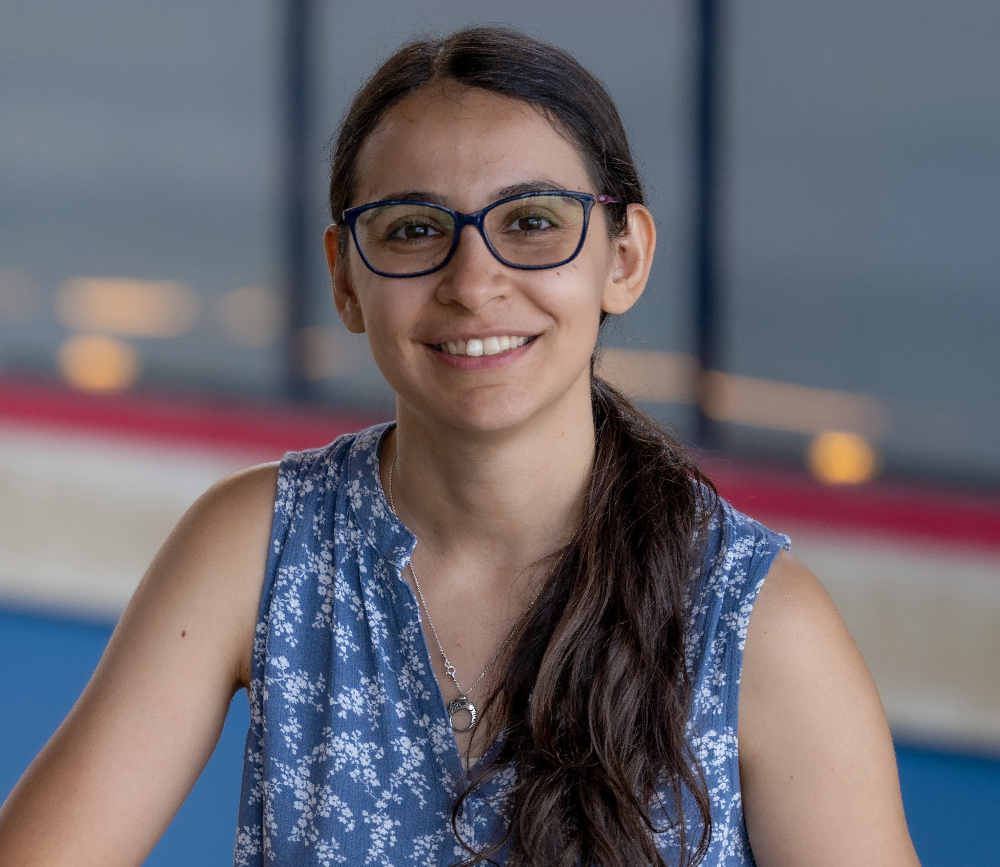

Mina Tahmasbi Arashloo
Assistant Professor
Cheriton School of Computer Science, University of Waterloo
Email: mina (dot) arashloo (at) uwaterloo.ca
Office: DC 3510
CV (last updated November 2022)
I am an assistant professor at the Cheriton School of Computer Science at University of Waterloo.
Before joining Waterloo, I was a Presidential Post-Doctoral Fellow at the computer science department of Cornell University, working with Nate Foster, and Rachit Agarwal.
I received my PhD in computer science from Princeton University, where I was advised by Jennifer Rexford.
I got my B.Sc degree in Computer Engineering from department of Computer Engineering at
Sharif University of Technology.
Research Interests: I am primarily interested in networked systems, with a focus on software defined networking (SDN) and programmable data planes.
I explore how to make networks more robust by developing tools for automated analysis of network functionality, generating correct and efficient implementations on high-speed network hardware, and monitoring for validation purposes at run-time.
Personal: My other half, Sepehr Assadi, does theoretical computer science at University of Waterloo.
Prospective Students: I am looking for highly-motivated students to join my lab! If you are interested in working with me, send me an email and make sure to list my name as a potential advisor in your application.
Note on emails: I'd love to hear from you! If you are interested in computer networks and have explored my research by reading some of my papers, do not hesitate to reach out. In your email, please make sure to include the information listed at this link. Unfortunately, I may not be able to respond to any other types of emails regarding graduate admissions.
Note on emails: I'd love to hear from you! If you are interested in computer networks and have explored my research by reading some of my papers, do not hesitate to reach out. In your email, please make sure to include the information listed at this link. Unfortunately, I may not be able to respond to any other types of emails regarding graduate admissions.

Teaching
- CS 856: Programmable Networks: [Winter 2023]
Publications
-
Formal Methods for Network Performance Analysis
NSDI 2023
Mina Tahmasbi Arashloo, Ryan Beckett, Rachit Agarwal
[Paper] -
dcPIM: Near-Optimal Proactive Datacenter Transport
SIGCOMM 2022
Qizhe Cai, Mina Tahmasbi Arashloo, Rachit Agarwal
[Paper] -
Modular Switch Programming under Resource Constraints
NSDI 2022
Mary Hogan, Shir Landau-Feibish, Mina Tahmasbi Arashloo, Jennifer Rexford, David Walker
[Paper] [NSDI'22 Talk] -
Towards Formally Verifying Congestion Control Behavior
SIGCOMM 2021
Venkat Arun, Mina Tahmasbi Arashloo, Ahmed Saeed, Mohammad Alizadeh, Hari Balakrishnan
[Paper] [SIGCOMM'21 Talk] -
DBVal: Validating P4 Data Plane Runtime Behavior
SOSR 2021
K Shiv Kumar, Ranjitha K, P S Prashanth, Mina Tahmasbi Arashloo, Venkanna U., Praveen Tammana
[Paper] -
Petr4: Formal Foundations for P4 Data Planes
POPL 2021
Ryan Doenges, Mina Tahmasbi Arashloo, Santiago Bautista, Alexander Chang, Newton Ni, Samwise Parkinson,
Rudy Peterson, Alaia Solko-Breslin, Amanda Xu, Nate Foster
[Paper][POPL'21 Talk] -
Elastic Switch Programming with P4All
HotNets 2020
Mary Hogan, Shir Landau-Feibish, Mina Tahmasbi Arashloo, Jennifer Rexford, David Walker, Rob Harrison
[Paper] [HotNets'20 Talk] -
Enabling Programmable Transport Protocols in High-Speed NICs
NSDI 2020
Mina Tahmasbi Arashloo, Alexey Lavrov, Manya Ghobadi, Jennifer Rexford, David Walker, David Wentzlaff
[Paper] [NSDI'20 Talk] -
Tracking P4 Program Execution Path in the Data Plane
SOSR 2020
Best Paper Award
-
Stateful Programming of High-Speed Network Hardware
PhD Dissertation, June 2019
ACM SIGCOMM Dissertation AwardMina Tahmasbi Arashloo
[Dissertation] -
A Scalable VPN Gateway for Multi-Tenant Cloud Services
SIGCOMM Computer Communication Review 2018
Mina Tahmasbi Arashloo, Pavel Shirshov, Rohan Gandhi, Guohan Lu, Lihua Yuan, Jennifer Rexford
[Paper] - HotCocoa: Hardware Congestion Control Abstraction HotNets 2017
-
SNAP: Stateful Network-wide Abstractions for Packet Processing
SIGCOMM 2016
Mina Tahmasbi Arashloo, Yaron Koral, Michael Greenberg, Jennifer Rexford, David Walker
[Paper] [Technical Report] [SIGCOMM'16 Talk] [Longer Talk at NPI] -
Compiling Path Queries
NSDI 2016
Srinivas Narayana, Mina Tahmasbi Arashloo, Jennifer Rexford, David Walker
[Paper] [Project Website] [NSDI'16 Talk]
2023
2022
2021
2020
2019
2018
2017
2016
Selected Awards and Recognition
- Rising Stars in Networking and Communication by N2Women (2021)
- Cornell Presidential Post-Doctoral Fellow (2019 - 2022)
- ACM SIGCOMM Dissertation Award (2019)
- Siebel Scholar (Class of 2019)
- Rising Stars in EECS at MIT (2018)
- School of Engineering and Applied Sciences (SEAS) Award of Excellence by Princeton University (2017)
Advising
I am very fortunate to work with the following students:
- Pedro Mizuno (MMath @ UWaterloo)
Professional Service
-
Program Co-Chair
- P4 Workshop (2023)
- Symposium on SDN Research (SOSR) (2022)
- The N2Women Workshop at SIGCOMM (2022)
-
Program Committee Member
- USENIX NSDI (2023)
- ACM SoCC (2022)
- ACM HotNets (2021)
- ACM CoNEXT (2021)
- ACM/IEEE ANCS (2021)
- ACM SIGCOMM (2020)
- ACM SIGCOMM Posters and Demos (2020)
- Symposium on SDN Research (SOSR) (2019, 2020, 2021, 2022)
- Asia-Pacific Workshop on Networking (2020, 2022)
- P4 Workshop (2018, 2019, 2021)
- EuroP4 Workshop (2020, 2021)
-
Other Committees and Panels
- ACM SIGCOMM Publication co-chair (2020)
- NSF CNS Panel (2020)
-
External Reviewer
- Conferences: ASPLOS (External Review Committee, 2021), INFOCOM (2017)
- Selected Journals: ACM SIGCOMM CCR, IEEE Transactions on Networking (TON), IEEE Transactions on Very Large Scale Integration Systems (TVLSI)